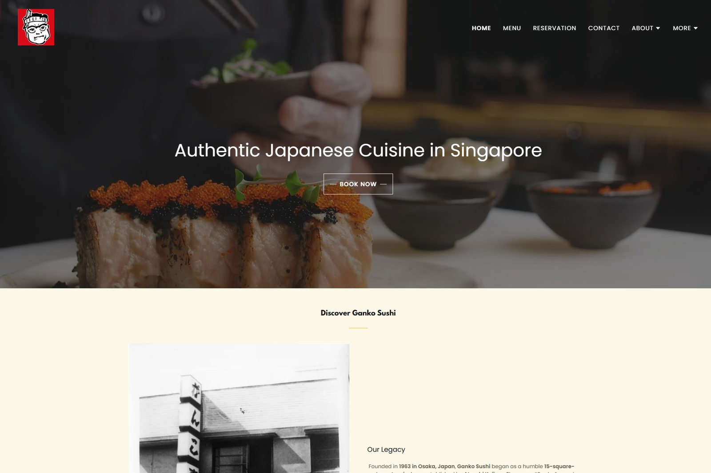
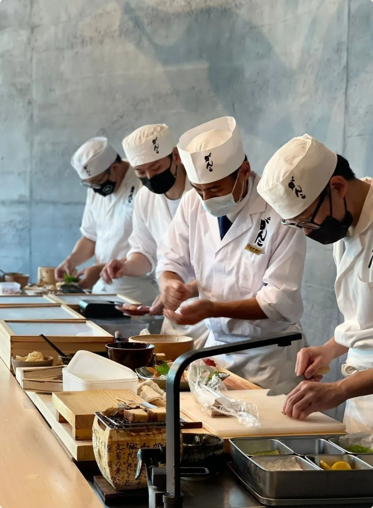
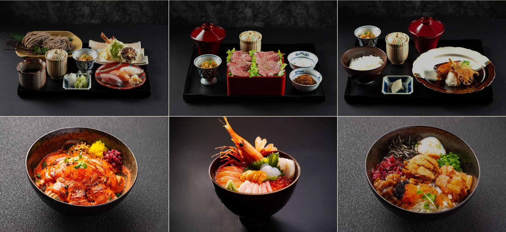
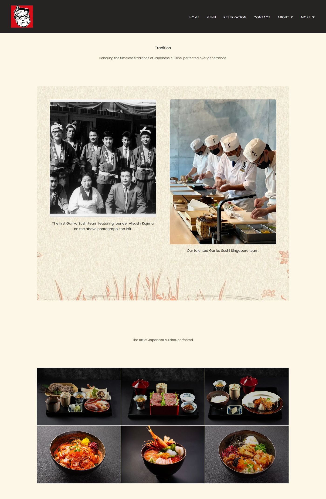
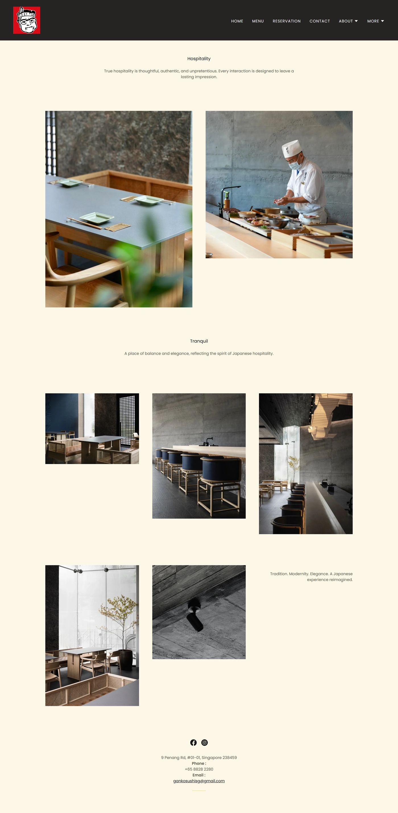
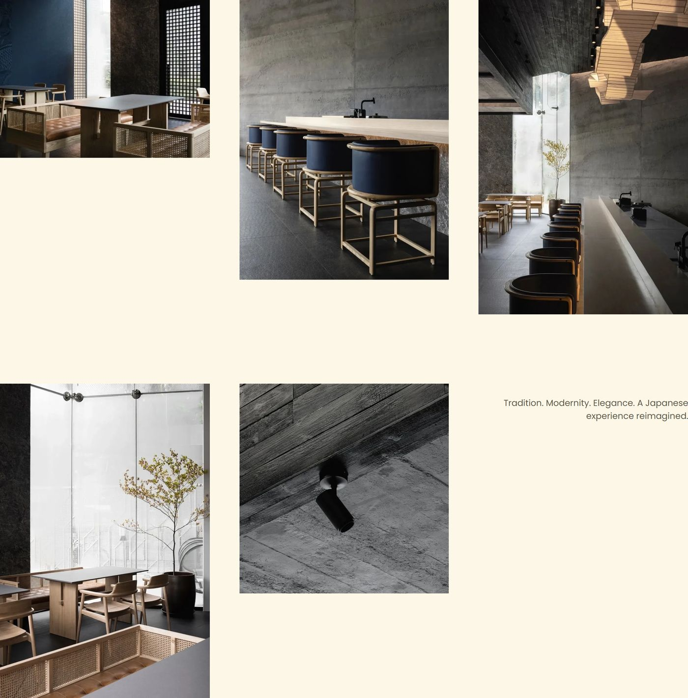
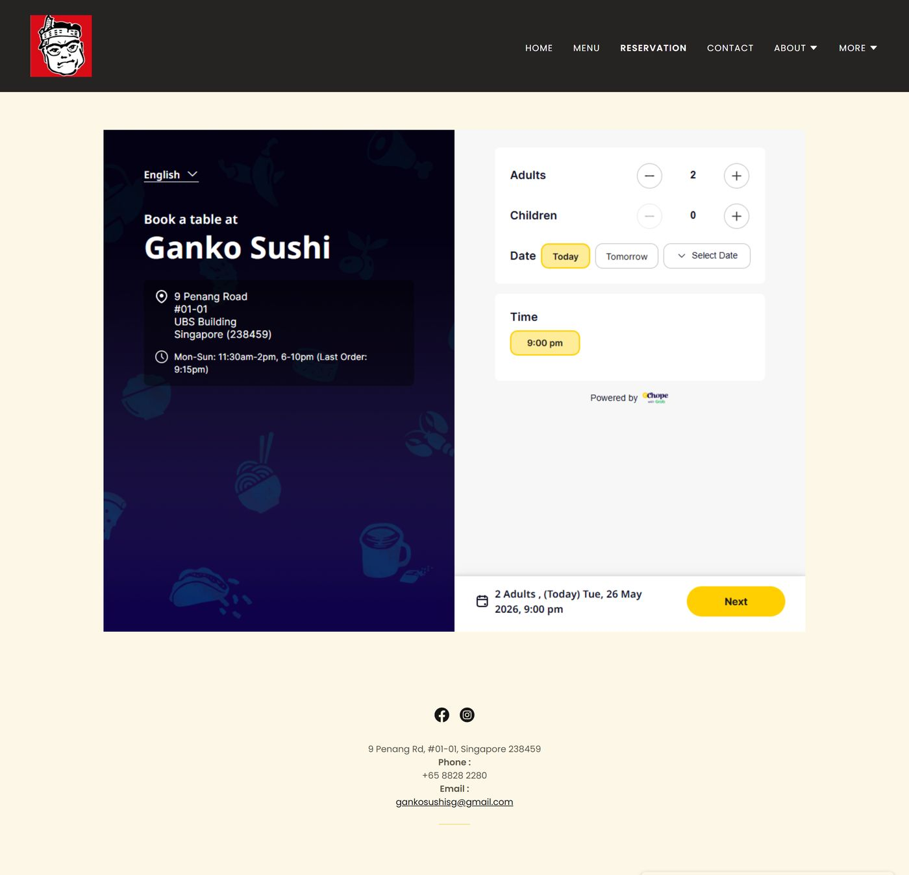
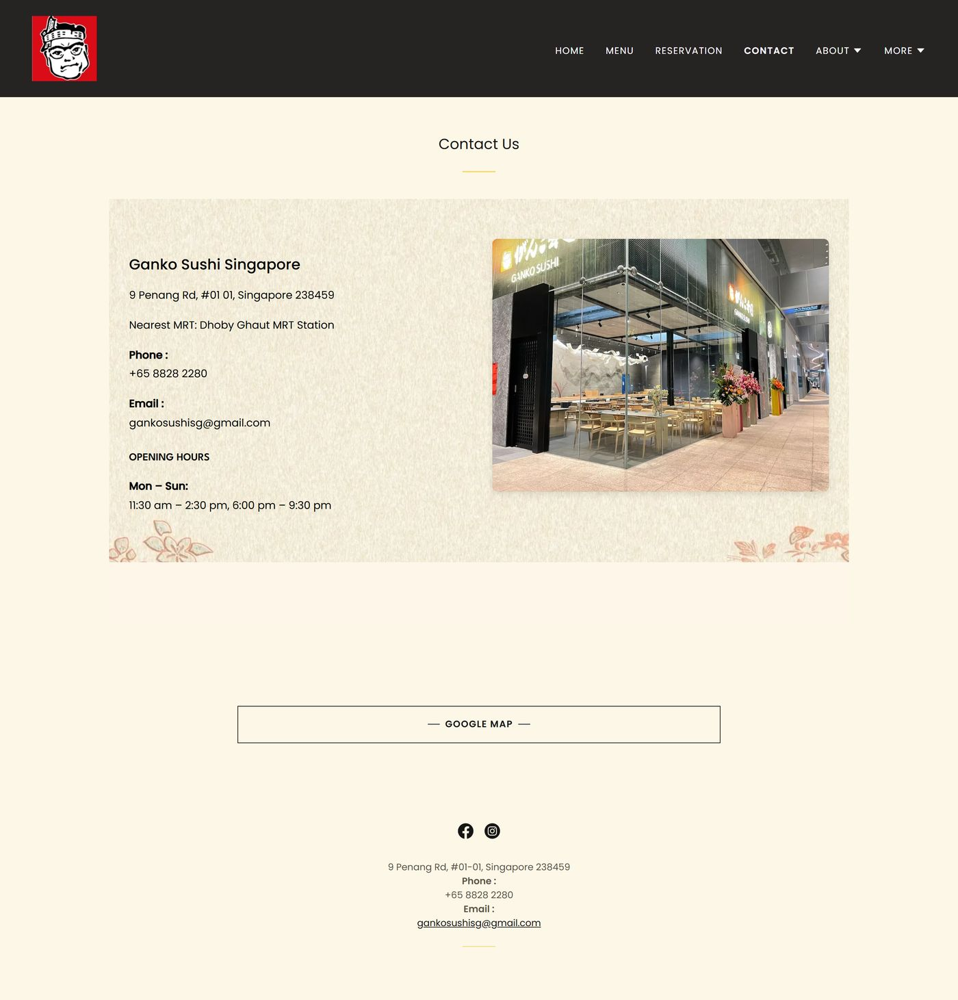
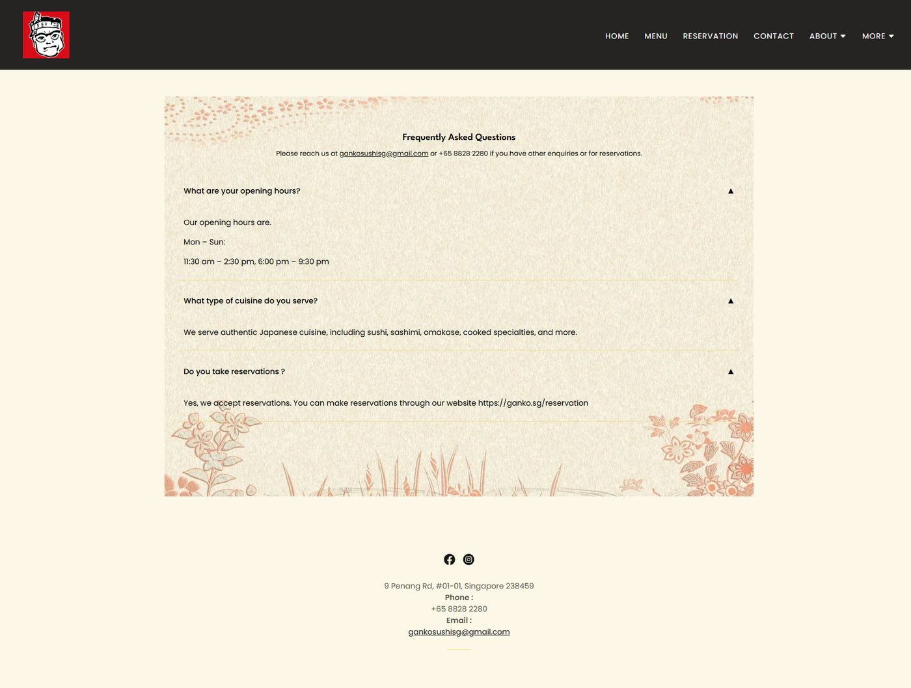
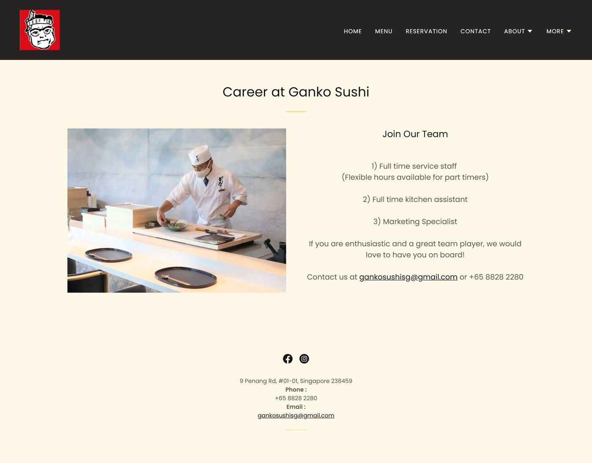

Ganko.sg
Ganko Sushi Singapore

Sixty years of sushi, one Singapore flagship.
Ganko Sushi began in 1963 as a 15-square-metre eatery in Juso, Osaka, and has grown to more than 100 outlets across Japan and Hong Kong. Its Singapore restaurant on Penang Road opened in 2021. The site needed to carry that heritage, present the food and the space, and make booking a table simple.
- Founded
- 1963
- Juso, Osaka
- Outlets
- 100+
- Japan & Hong Kong
- Singapore
- 2021
- 9 Penang Road
- My role
- Solo, end to end — low-fi drafts in Figma, the information architecture, layout and visual direction, then the full build in GoDaddy Website Builder.
- The hard part
- A builder-based platform with fixed blocks, and a sixty-year heritage story to tell alongside menus, interiors and bookings. I split eight pages into two journeys — discover, and plan a visit — and embedded Chope reservations so booking is one click from anywhere.
Let the restaurant speak first.
The layout stays quiet so the photography carries the experience: archival images of the founding team sit beside today's Singapore kitchen, and the brand's own warmth — rice-paper backgrounds, washi textures and the founder's caricature mark — frames everything. Type stays small and calm; the food and the interiors do the talking.
- Heritage first
The 1963 story leads the homepage and the About pages, told through original photographs.
- Imagery-led
Generous image grids for dishes and interiors, with copy kept short and centred.
- Booking within reach
"Book now" sits in the hero, Reservation in the main navigation, and contact details repeat in every footer.

Warm, paper-toned, one loud mark.
- Charcoal#262323
- Rice paper#FDF7E7
- Washi#F0EAD8
- Ganko red#D90C18
Charcoal navigation and rice-paper pages keep the palette warm and restrained, leaving the red caricature mark as the single loud element on every page.

Eight pages, two journeys.
Guests either want to understand the restaurant or book a table. The navigation splits along those lines: story pages under About, practical pages one click from anywhere.
Discover
- Home
- Menu
- About — Tradition
- About — Hospitality
Plan a visit
- Reservation
- Contact
- FAQ
- Careers



Tranquil.
Interior photography is set in an asymmetric gallery — varied crops and heights that echo the restaurant's timber, stone and light.
The practical pages, kept effortless.
Reservations run through an embedded Chope booking widget. Address, hours, phone and email are repeated in every footer, and the FAQ answers the questions guests ask most.




Hosted, responsive, easy to update.
- GoDaddy Website BuilderPlatform
- ChopeEmbedded reservations
- Responsive layoutsDesktop & mobile
- Web designLayout & art direction